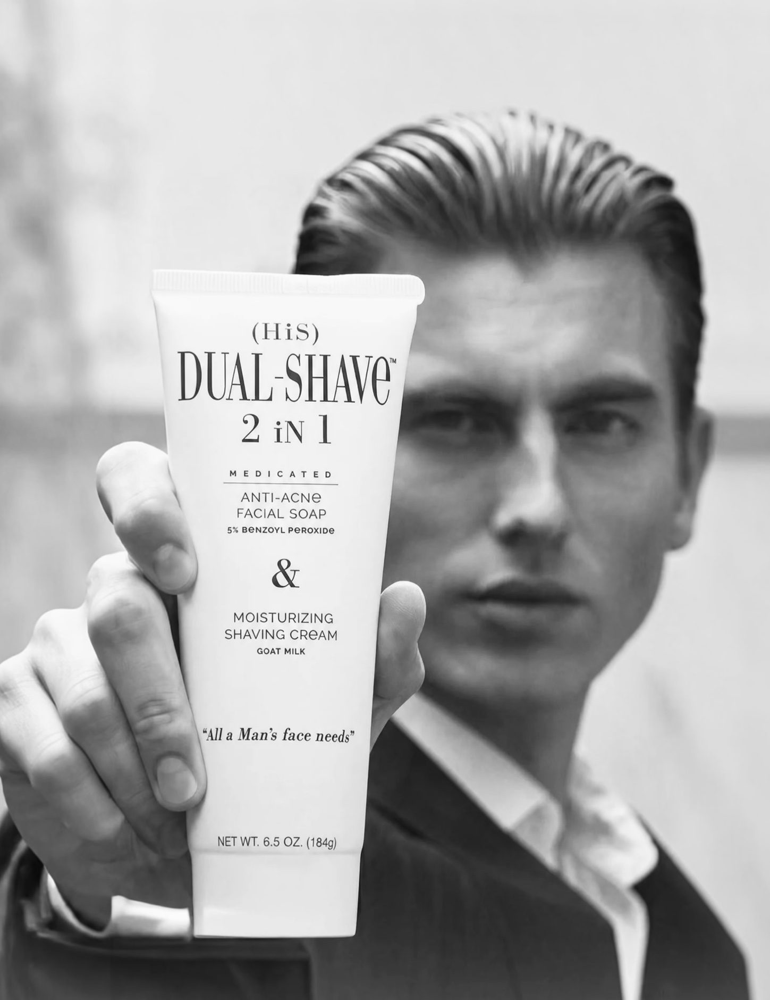
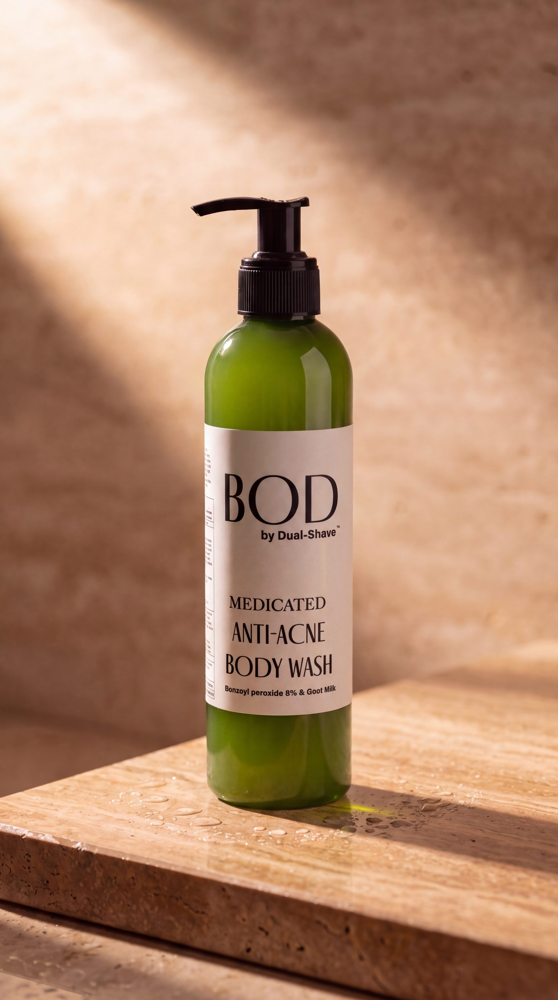

Shave + Wash
3.4 oz / 6.5 oz
from $15.99

3.4 oz / 6.5 oz
from $15.99

1 oz
$15.00

8 oz
$59.00

Nisan Lamden trained as a diamond grader at the Gemological Institute of America before becoming a licensed cosmetologist in Beverly Hills. Dual-Shave is the line he formulated for the clients at his chair.
Beverly Hills · By appointment only